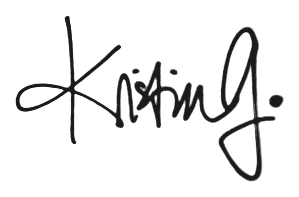

About

I have built my career at mission-driven organizations that take ideas seriously and seek to reach the people who need them.
My professional work spans editorial vision, content strategy, thought leadership, and brand voice—at the Institute of Design (Illinois Tech), the University of Chicago, and the Poetry Foundation. Along the way, I've edited books, produced podcasts, directed public programs, and built content ecosystems. I've also taught kindergartners in the Caribbean, undergraduates in the suburbs, and graduate students in the South Side of Chicago, studied art history, developed creative nonfiction, and advised deans and executives on how to say what they mean.
My doctoral research at the Institute of Design examines human agency in AI-augmented environments—specifically how writing and design literacy can strengthen our capacity to think critically, imagine alternatives, and participate in shaping the technologies that surround us. I have presented this work at the Writing Innovation Symposium, the Feminisms and Rhetorics Conference, the Image Conference, and soon (2026) the Philosophy of Human-Technology Relations Conference at TU Delft.
I care deeply about our children's futures, I believe reading someone closely is a distinctly rewarding human intimacy, and I think collaborative writing can be a form of care. I live near Chicago with a pack of wolves my husband, three kids, and Australian Cattle Dog-mix. Somehow, the only band that my husband and I can agree upon is the Mountain Goats.